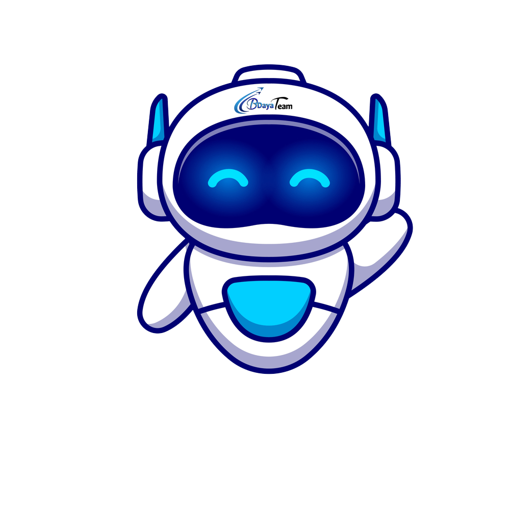
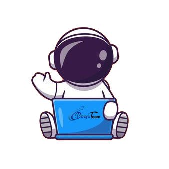

BDaya is a university team that was established in 2015 by some ambitious educated students with the aim of spreading knowledge of computer science and its fields and building distinguished student models scientifically, professionally and ethically in order to build and prosper the student community with science, and create a civilized environment where friendship, cooperation and active participation prevail, and revive the values of cooperation and dialogue that leads to Consolidating and spreading the concept of organized teamwork and striving to develop and encourage a sense of innovation and creativity among students, as this works to transfer experiences among students


Before Reaching Greatness, One Must Pass BDaya
About us
